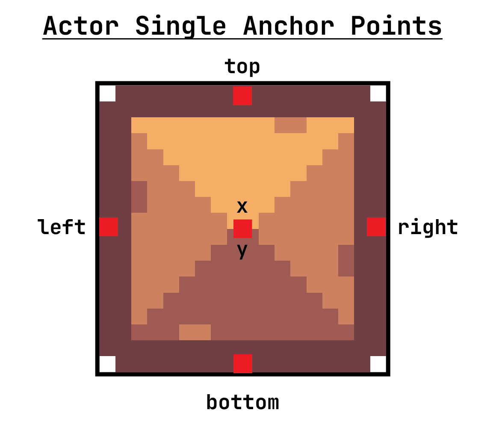
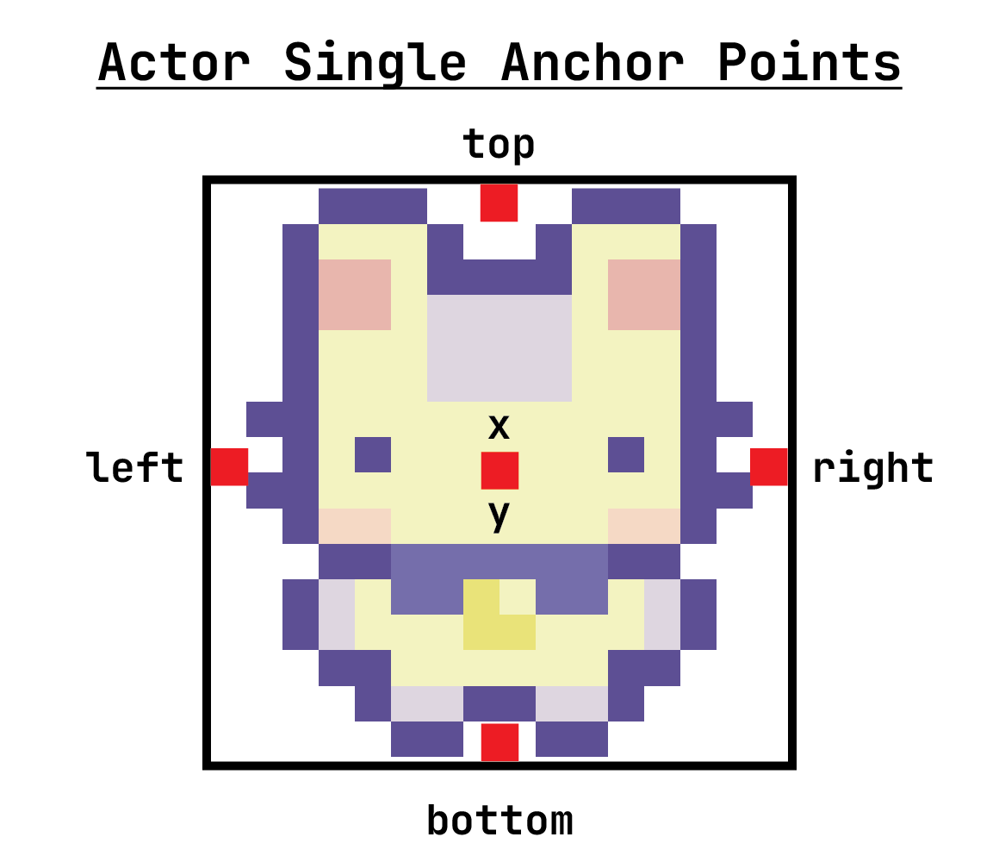

CS4040 · Unit 5: 2D Game Mechanics
player.angle # gets current angle in degrees
player.angle += 1 # increments angle by 1
player.scale # gets current Actor scaling factor
player.scale = 2.0 # sets the Actor scaling factor
player.flip_v = True # flips the Actor vertically
player.flip_v = False # turns off vertical flip, default
player.flip_h = True # flips the Actor horizontally
player.flip_h = False # turns off horizontal flip, defaultBy default an Actor collides using its whole image. Give it a smaller collision rectangle, centered on the Actor, for fairer collisions.
To see where it is, draw it in draw() after drawing the Actor:
Pygame Zero docs: Sprite Animations
Sprite is one animation: its frames, how fast to play them, and whether to loop.images foldersprites folderThe quickest way: list the image names in order.
fps and loop can be given with a list of images.A sprite sheet is one image that holds every frame of a character’s animations, laid out in a grid. Each row is one animation (idle, walk, jump, …), and every frame is the same size. Rows and frames are counted from 0, starting at the top left.
Keep sprite sheets in the sprites folder. Each sheet there has a .md file listing its frame size and what is on each row.
Sprite Studio turns art from anywhere (sheets, GIFs, Aseprite files, folders of frames) into a sprite sheet that works here, and writes the Sprite(...) code for you.
# Sprites made from rows of a sprite sheet in the sprites folder
idle = Sprite("rabbit", frame_width=16, frame_height=16, row=0, frames=2, fps=3)
walk_left = Sprite("rabbit", frame_width=16, frame_height=16, row=6, frames=2, fps=8)
walk_right = Sprite("rabbit", frame_width=16, frame_height=16,row=7, frames=2, fps=8)image_name: sprite sheet filename in the sprites folderframe_width, frame_height: size of each frame, in pixelsrow (optional): row to start from, counting from 0. Default 0.frames (optional): number of frames. Default: the whole row.fps (optional): frames per second. Default 10.loop (optional): False plays once. Default True.transparent_color (optional): color to make see-through.spacing, margin (optional): gaps between frames and around the sheet, in pixels.Give the Actor a Sprite. Set actor.sprite to switch animations.
loop=False stops on the last frame. animation_finished is True once it has.
fox.sprite == hurt checks which animation is playing.def on_key_down(key):
if key == keys.SPACE:
fox.sprite = hurt # replays if it has already finished
if key == keys.P:
if fox.animation_paused: # True while paused
fox.resume_animation() # carry on from the same frame
else:
fox.pause_animation() # freeze on the current frame
if key == keys.R:
fox.reset_animation() # play again from the first frameFULLSCREEN = True at the top of your game to start in fullscreen..png image file that contains many small images (tiles) arranged in a grid. Each tile is a piece of the world (grass, wall, water, etc.). This is the art asset created by the artist..tsx file created in Tiled that defines how to use a tilesheet. It tells Tiled things like tile size, spacing, and any extra data. It references a tilesheet. (Tileset and tilesheet are often used interchangeably.).tmx file created in Tiled that defines the actual level layout. It uses one or more tilesets and organizes tiles into layers (ground, walls, hazards, etc.). This is the level design.Note: the tilesheet, tileset, and tilemap must all be stored in the maps folder of your project.
Make your own constants and use them to compute the window size!
# our tile map constants
TILE_SIZE = 16 # length of a tile, in pixels
MAP_WIDTH = 30 # width of the tilemap, in tiles
MAP_HEIGHT = 20 # height of the tilemap, in tiles
SCALE = 2 # global scaling factor
# can use to compute screen dimensions
WIDTH = TILE_SIZE * MAP_WIDTH * SCALE
HEIGHT = TILE_SIZE * MAP_HEIGHT * SCALEUse load_tile_map() to import your map made in Tiled into your game based on tile map layers.
tmx_name: path to the TMX file defining the tilemap, created in Tiled.scale: scaling factor applied to the map for display in Pygame.Get each layer by its name in Tiled, like level["walls"]. A layer works like a list of tiles, and every tile is an Actor, so collidelist() and for loops work on it.
A tile map is made of three kinds of thing, each inside the one before:
level) holds every layer.walls = level["walls"]) is a list of tiles.wall = walls[0]) is one Actor on the map.Each method belongs to one of them. The variable before the dot tells you which: level.draw() is the map, walls.get_tile(...) is a layer, wall.set_tile_image(...) is a tile.
level.draw() draws every layer in Tiled’s layer order, from the bottom of Tiled’s Layers list to the top: background first, foreground last.
hazards.visible = False or True.

Repeat for each direction, putting the edge you moved against back on the wall.
# left keyboard button pressed
if keyboard.LEFT:
rabbit.x -= 2 # move to left
rabbit.sprite = walk_left # change to left sprite
# check for collision
collision_index = rabbit.collidelist(walls)
# did collision occur after moving to left?
if collision_index != -1:
# if so, put character's left edge on right edge of wall
rabbit.left = walls[collision_index].rightcollidelist() gives the index of the tile you touched. pop() that index to take it off the map.
Columns and rows count from 0, starting at the top left. They mean two different grids:
col, row says which square, like (5, 2). Each layer holds at most one tile per square.tile_col, tile_row says which image, like (3, 8).The map creates new tiles from an image in its tileset:
level.create_tile(3, 8, tileset="town")A layer adds and removes tiles by square. A new tile isn’t on the map until you add it.
set_tile() replaces any tile already in that square.remove_tile() does nothing if the square is already empty.pop() the index from collidelist().if wall:get_tile() gives back the tile in a square, or None if the square is empty. None means “nothing”, and it has no methods, so using it crashes:
if wall: is True for a tile and False for None, so it only runs when there is a tile:
A tile can change which tileset image it shows. Find it with get_tile(), check it’s there, then change it:
The map converts between pixel positions and squares:
level.pos_to_map(x, y) turns a position in pixels into a col, row.
level.map_to_pos(col, row) turns a square into the position of its center.
For a map bigger than the screen, keep the player still and move the map. Change level.x and level.y, and every tile moves.
def update():
old_x, old_y = level.x, level.y
if keyboard.left:
level.x += 3 # move the map right, so the rabbit seems to walk left
if keyboard.right:
level.x -= 3
if keyboard.up:
level.y += 3
if keyboard.down:
level.y -= 3
if rabbit.collidelist(walls) != -1:
level.x, level.y = old_x, old_y # hit a wall: put the map backlevelHolds every layer.
walls = level["walls"] # get a layer by its name in Tiled
level.draw() # draw every visible layer
new_wall = level.create_tile(3, 8) # create a tile from the tileset
col, row = level.pos_to_map(x, y) # pixels -> square
x, y = level.map_to_pos(col, row) # square -> pixels (its center)
level.x -= 3 # scroll the whole mapwallsA list of tiles.
first = walls[0] # it's a list of tiles: [i], len(), for loops
index = rabbit.collidelist(walls) # collisions work like any list
walls.pop(index) # remove a tile by its index
wall = walls.get_tile(col, row) # the tile in a square, or None
walls.set_tile(col, row, new_wall) # put a tile in a square
walls.remove_tile(col, row) # empty a square
walls.visible = False # stop drawing it (it still collides)wallOne Actor on the map.